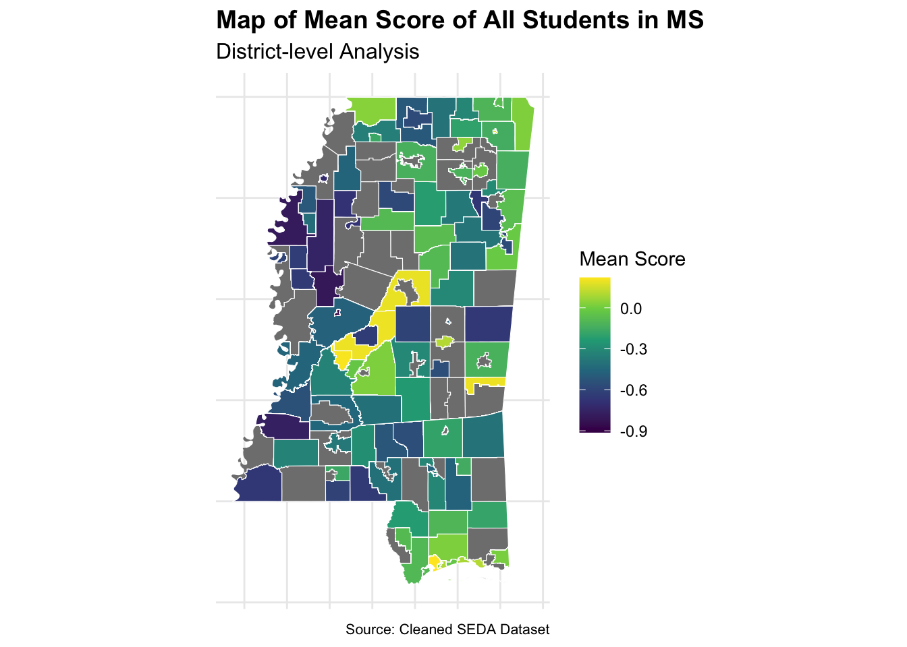

| Variable | Description |
|---|---|
| mn_score_all | Average test scores for the district; Anything less than -0.75 is below basic. Between -0.75 and 0.05 is basic. Between 0.05 and 1.0 is proficient. Above 1.0 is advanced. |
| perecd | Percentage of Economically disadvantaged students |
| povertyall | Poverty rate in the district |
| unempall | Unemployment rate in the district |
| lninc50all | Natural Log of Median Income |
| baplusall | Percentage of Parents had Bachelor’s Degree or Above |
| perblk | Percentage of Black Students |
| perasn | Percentage of Asian Students |
| perwht | Percentage of White Students |
From Bay State to Magnolia State
Unveiling the Education Gap Between Massachusetts and Mississippi
Introduction
Imagine two children, one in Massachusetts, the richest state in terms of educational attainment, and the other in Mississippi, ranked lowest on the same scale. Though separated by over a thousand miles, the distance is more than geographical—it’s educational, economic, and deeply rooted in the very fabric of society. This article dives into the complex interplay of socioeconomic factors that shape educational outcomes, revealing how deeply inequality is entrenched from one generation to the next.
Thesis Statement
In Massachusetts and Mississippi, the chasm in educational outcomes extends beyond mere geography and taps directly into profound socioeconomic disparities. Our analysis, focusing on district-level data, demonstrates a stark correlation: in areas where economic disadvantage is more pronounced, educational performance, particularly in language and math, significantly declines.
In the second part of our analysis, we document that the factors influencing test scores have relatively similar impact estimates in both states. This indicates that individual district demographic factors have similar impacts on test scores regardless of the state’s overall test score level.
Data and Methodology
Our study utilizes a comprehensive dataset encompassing district-level information from both states, including metrics on economically disadvantaged students, poverty rates, unemployment levels, median income, parental educational attainment, and racial demographics. By analyzing these variables, we aim to paint a detailed picture of how socioeconomic factors influence student performance across diverse communities.
Description of Variables
Massachusetts
Mississippi
As we journey through the educational terrain of Massachusetts and Mississippi, the contrasts are as stark as the shades of blue that paint our histograms. From the cobalt peaks representing Massachusetts’s highly educated parents to the navy troughs echoing Mississippi’s economic struggles, each bar tells a story.
In Massachusetts, the histogram showcasing parental education is a mountain range of ambition, with a majority of districts featuring a high percentage of parents holding bachelor’s degrees. It’s a testament to the state’s rich educational foundation. Contrast this with Mississippi, where these peaks are notably subdued, hinting at a landscape where higher education is a distant summit for many.
Economic disadvantage casts long shadows across the Mississippi graph, where the frequency of high percentages is all too common, a reflection of the hardship many students face before they even step into a classroom. Massachusetts, while not immune to these challenges, shows a distribution with fewer districts at the higher end of economic disadvantage, suggesting a different kind of starting line for students.
The racial composition histograms are a mosaic of demographic diversity. Massachusetts’s ‘White’ bars rise high, a sign of racial homogeneity in many districts. Mississippi tells a different story, with ‘Black’ significantly more represented, raising questions about how racial and economic factors interweave to shape educational outcomes.
Poverty and unemployment in Mississippi seem to walk hand in hand, with histograms skewing towards higher rates than those in Massachusetts. It’s a silent narrative of the daily challenges students bring with them to school, burdens that can weigh heavily on academic achievement.
Mean Score of MA and MS
| state | mn_score_all |
|---|---|
| MA | 0.4624010 |
| MS | -0.3302381 |
Data on the Map:
As you can see from the map of Massachusetts and Mississippi, districts with a lower percentage of economically disadvantaged students tend to have higher mean scores, while those with a higher percentage of economically disadvantaged students generally exhibit lower mean scores overall.

Economic Factors
Our initial focus is on economic variables. Poverty and unemployment, often intertwined, emerge as significant predictors of educational success. Districts with higher poverty rates consistently show lower educational outcomes. This pattern underscores the critical role that economic stability plays in supporting academic achievement.
Educational Background of Parents
Another striking factor is the educational attainment of parents. Districts where a higher percentage of parents hold bachelor’s degrees or higher often report better student performance. This relationship highlights the cyclical nature of education—where educational advantages and disadvantages are passed down through generations, potentially widening the gap.
Racial Demographics
Finally, the racial composition of districts also plays a critical role in educational outcomes. Our analysis indicates varied performance across different racial groups, with significant disparities evident between and within states. These findings provoke a broader discussion on the intersection of race, education, and socioeconomic status.
Discussion
Our exploration reveals a troubling yet clear picture: socioeconomic factors like poverty, unemployment, and parental education significantly influence educational outcomes in Massachusetts and Mississippi. This underscores the urgent need for policy interventions aimed at reducing educational disparities as a step towards greater social equity.
The heart of our analysis was focused on examining if the factors influencing test scores have the similar effect at similar rates across two states with very different overall test score levels. In other words, does the percent of Asian students have the same influence on test scores in a state that has low overall test scores as a state that has high overall test scores? Is the effect dampened by having higher overall levels? Is the same true for the rate of black students? White students? Economically disadvantaged students?
Results
Call to Action
Understanding these disparities is just the beginning. We must now turn insights into action. By supporting policies that target educational equity—such as improving access to quality education, enhancing parental support programs, and addressing systemic poverty—we can begin to close this educational gap.
We can see that two very different states have similar effects on test scores from different demographic characteristics. This is promising for a variety of reasons, but most importantly it indicates that nationwide policies are feasible solutions. Even if test scores are at different levels, the same factors are having similar effects on test scores, which means that changing these demographics (like increasing the rate of parents with a BA) will “lift all boats” across the country.
Rubric: On this page
You will
- Title
- Your big picture page should have a creative/click-bait-y title/headline that provides a hint about your thesis.
- Clarity of Explanation
- You should have a clear thesis/goal for this page. What are you trying to show? Make sure that you explain your analysis in detail but don’t go into top much mathematics or statistics. The audience for this page is the general public (to the extent possible). Your thesis should be a statement, not a question.
- Each figure should be very polished and also not too complicated. There should be a clear interpretation of the figure so the figure has a clear purpose. Even something like a histogram can be difficult to interpret for non-experts.
- Creativity
- Do your best to make things interesting. Think of a story. Think of how each part of your analysis supports the previous part or provides a different perspective.
- This page should be self-contained.
Note: This page should have no code visible, i.e. use #| echo: FALSE.
Rubric: Other components
Video Recording
Make a video recording (probably using Zoom) demonstrating your interactive components. You should provide a quick explanation of your data and demonstrate some of the conclusions from your EDA. This video should be no longer than 4 minutes. Include a link to your video (and password if needed) in your README.md file on your Github repository. You are not required to provide a link on the website. This can be presented by any subset of the team members.
Rest of the Site
Finally, here are important things to keep in mind for the rest of the site.
The main title of your page is informative. Each post has an author/description/informative title. All lab required posts are present. Each page (including the home page) has a nice featured image associated with it. Your about page is up to date and clean. You have removed the generic posts from the initial site template.